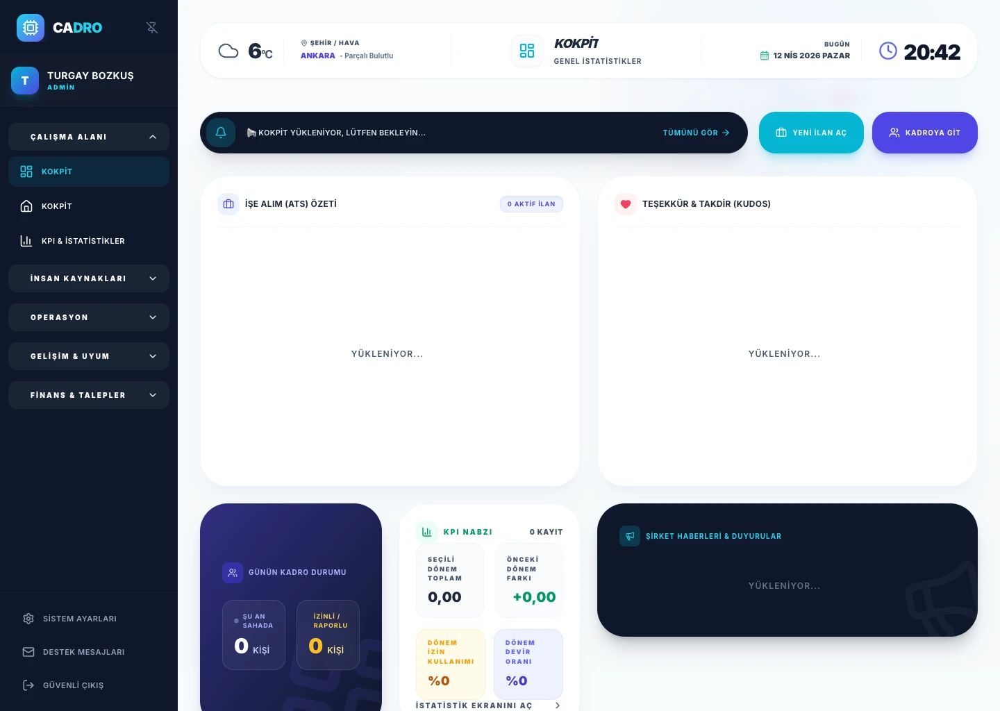

Sıfır Formül Hatası
Excel’de tek bir satır kayması bordroyu bozar. CADRO hesaplamaları her zaman doğru.

DİJİTAL DÖNÜŞÜM
Manuel hesaplamalar, hatalı formüller ve güvenlik risklerinden çıkın. Verilerin gerçekten konuştuğu otomatik bir İK sistemine geçin.

Veriler ayrı sayfalarda yaşar. Biri izin aldığında puantaj otomatik güncellenmez.
Her şey entegre. İzin onaylandığı anda takvim güncellenir ve bordro hazırlığı otomatikleşir.
Sıfır hesaplama hatası ve stratejik İK işleri için büyük bir zaman bütçesi.
KARŞILAŞTIRMA
Excel’de tek bir satır kayması bordroyu bozar. CADRO hesaplamaları her zaman doğru.
.xlsx dosyası yerine, verileriniz şifrelenir ve KVKK uyumlu bulutta saklanır.
Excel çalışan verisini güvenle açamaz. Cadro, her çalışana sadece kendi kayıtlarını görebileceği güvenli panel verir.
SSS
Excel güçlü bir araçtır ama veritabanı veya otomasyon sistemi değildir. Formül hatalarına açıktır, denetim kaydı yoktur ve çalışan sayısı arttıkça yavaşlar.
Evet. Akıllı içe aktarma aracıyla çalışan listeleri, departmanlar ve geçmiş izin bakiyelerini tek bir Excel şablonuyla dakikalar içinde aktarabilirsiniz.
HAZIR MISINIZ?